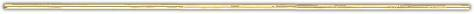

|
Dans la
généalogie de la ZoneCharette, notre lien avec les Caron vient de
Marie-Anna Caron, l'épouse de Rosario Charette.
Vous
trouverez donc dans ces pages des informations sur la vie, la famille et l'époque
de Marie-Anna et de Rosario.  Site créé le 27 août 2002, en
800 X 600. ©Nicole Charette |